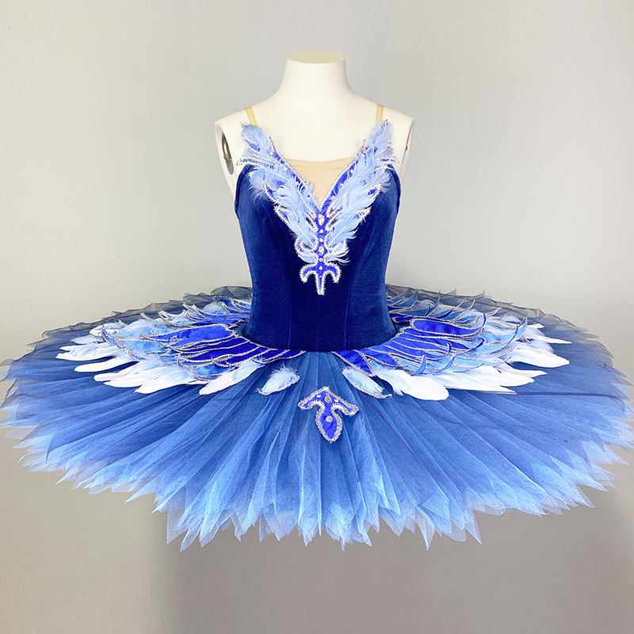
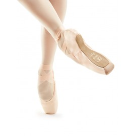

<!DOCTYPE html>
<html>
<head>
<style>

ul {
  list-style-type: none;
  margin: 0;
  padding: 0;
  overflow: hidden;
  background-color: #55afed;
}

li {
  float: left;
  border-right:1px solid #bbb;
}

li:last-child {
  border-right: none;
}

li a {
  display: block;
  color: white;
  text-align: center;
  padding: 14px 16px;
  text-decoration: none;
}
 
li a:hover:not(.active) {
  background-color: #a4d4f5;
}

.active {
  background-color: #0590f0;
}
body {
  background-color: #d3e7f5;
}
.naslovi {
  color:#0590f0;
  text-align: center;
}
.rob {
  padding-left: 20%;
  padding-right: 20%;
  text-align: justify;
}
</head>
<body>

<ul>
  <li><a  href="index.html">Domov</a></li>
  <li><a class="active" href="#osnovno">Osnovno</a></li>
  <li><a href="koraki.html">Koraki</a></li>
   <li><a href="pozicije.html">Pozicije</a></li>
  
  <li style="float:right"><a href="viri.html">Viri</a></li>
</ul>
<h1 class="naslovi">O BALETU</h1>
<p class="rob">Balet je odrska izvedba umetniških plesov z glasbeno spremljavo. Vsebuje glasbo, zgodbo, ples, sceno in kostume. <br><br>
  Poznamo 4 vrste baleta: <br>
- romantični balet (vsebuje več igranja in lažje plesne gibe) <br>
- klasični balet (tradicionalna tehnika baleta-pravilna drža, težji plesni gibi) <br>
- moderni balet (po navadi nima vsebina, nadomeščajo pa jo občutki in razpoloženja) <br>
- jazz balet (vsebuje elemente jazza in klasične tehnike baleta) <br><br>
Najbolj prepoznavno baletno oblačilo je tutu, ki je namenjen le za nastopanje na odru. Je zelo kratko krilo, ki se dviga naravnost od telesa in je narejen iz večih plasti tila. Balerine imajo na nogah obute baletne špice, s katerimi lahko stojijo na konicah prstov. <br>
Beseda balet izhaja iz italijanske besede ballo, kar pomeni ples. Vsi baletni koraki/izrazi pa so zapisani v francoščini.<br><br>
Začetki baleta segajo v 15. in 16. stoletje, v obdobje italijanske renesanse. Leta 1661 je Ludvik XIV. ustanovil prvo Kraljevo akademijo plesa ali Academie Royale de Danse. <br>
V prvi polovici 19. stoletja se je v Parizu in Londonu pod vplivom romantike razvilo gibanje romantični balet. V tem času je nastalo mnogo najodmevnejših baletov, kot so Giselle, Gusar, Paquita in Coppélia. <br><br>
Do danes najbolj znani skladatelji in baleti so: <br>
- Adolphe-Charles Adam: Giselle <br>
- Léo Delibes: Coppélia, Sylvia <br>
- Ludwik Minkus: Bajadera, Don Kihot <br>
- Sergej Prokofjev: Romeo in Julija, Pepelka <br>
- Peter Iljič Čajkovski: Labodje jezero, Trnjulčica, Hrestač </p>
<br><br><br>
 
</body>
  </html>
